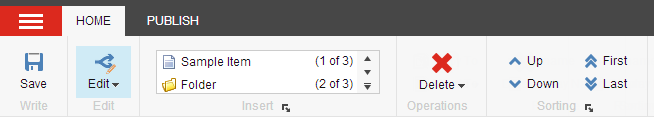

コンテンツエディター¶
コンテンツエディタは、ウェブサイト上のすべてのコンテンツを管理・編集するための編集ツールです。Sitecoreとそれに含まれる機能に精通している、より経験豊富なコンテンツ作成者向けに設計されています。
コンテンツエディタの外観と機能は、ユーザーの役割、ローカルのセキュリティ設定、Sitecoreのインストールに実装されているカスタマイズによって異なります。
コンテンツエディタのユーザーインターフェースは、3つの主要なエリアで構成されており、コンテンツエディタで作業する際に、個々のニーズに合わせてカスタマイズすることができます。3つのエリアは以下の通りです。
リボン - すべての機能が利用できる領域です。
コンテンツツリー - すべてのアイテムが整理されている領域です。
コンテンツエリア - アイテムを編集できるエリアです。
{kind=link}
リボン¶
リボンは、システムメニュー と、コンテンツエディタで使用できるすべての機能が利用できるタブで構成されています。
アクセス権とセキュリティ設定によって、リボンで使用できる機能は異なります。最低限、以下のような機能が表示されます。
{kind=link}
より広範なアクセス権を持っている場合は、より多くのコマンドやタブにアクセスすることができます。コンテンツエディタへの完全なアクセス権を持っている場合や、Sitecoreの管理者である場合は、以下のような表示になります。
{kind=link}
コンテンツツリー¶
コンテンツエディタの主な機能の1つはコンテンツツリーで、Sitecoreのインストールで作成されたすべてのアイテムを表示します。

Sitecoreのコンテンツツリーは、Windowsエクスプローラで使用されているものと似た構造になっていますが、Sitecoreのオブジェクトやグループは、標準的なフォルダやファイルのアイコンではなく、さまざまなアイコンで表現されています。
Windows Explorerのフォルダと同じように、Sitecoreのコンテンツツリー内のすべてのグループを展開して開くことができます。アイコンの横にプラスの'+'がある場合は、サブアイテムが含まれており、展開することができます。アイコンの横にマイナスの「-」がある場合は、すでに展開されており、シンボルがない場合はサブアイテムが含まれていません。
コンテンツエリア¶
コンテンツ領域は、アイテムを編集する場所です。コンテンツ ツリーで項目をクリックすると、コンテンツ領域に 2 つのタブが表示されます。
コンテンツ タブでは、項目のフィールド値を編集できます。
注釈
期待通りにフィールドが表示されない場合は、リボン上で [表示] タブをクリックし、[標準フィールド] チェックボックスを選択します。これにより、開くすべての項目に標準テンプレートのすべてのフィールドが表示されます。
選択した項目から検索できる「検索」タブ。
コンテンツエリアの右上には、選択された項目に固有の追加機能があります。
{kind=link}
機能性は以下の通りです。
Navigate - フィールド値のリスト内の特定のセクションまたはフィールドに移動します。
言語 - アイテムの言語バージョンを切り替えたり、新しい言語バージョンを作成したりできます。
Versions - アイテムのバージョンを切り替えたり、新しいバージョンを作成したりできます。
検証の警告 - 個々のアイコンにマウスを合わせると、現在のアイテムに関連する警告が表示されます。
Edit Profile Cards - アイテムに関連するプロファイルカードを編集できます。これは主にマーケティングユーザーに関連しています。